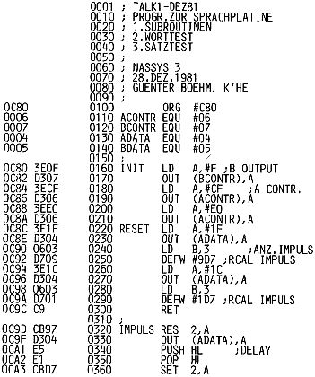

Nascom Journal |
Januar 1982 · Ausgabe 1 |
Im Dezember 81 veröffentlichte die Zeitschrift Elektor eine Sprachplatine, die um den Chip TMS 5100 von Texas Instruments aufgebaut ist. Die Platine ist leicht über PIO an den Nascom anzuschließen und befähigt den Rechner zu sprechen. Der Wortschatz besteht bisher aus 200 Wörtern, die in einem externen EPROM Speicher auf der Sprachplatine abgelegt sind. Bisher sind 16 K belegt, der Wortschatz kann aber erweitert werden bis auf 64k, ohne den Speicherbereich des Rechners zu belasten. Im nächsten Heft wollen wir noch einige Information zum Sprachprozessor TMS 5100 veröffentlichen. Für diesmal nur Anschlußhinweise und Programme zur Anwendung auf dem Nascom.
Der Anschluß an den „PIO-Bus“ ist sehr einfach. Ich habe mir ein Stück Lochrasterplatine auf die Sprachplatine geschraubt und einen 31-pol. Stecker eingelötet. Die Anschlüsse zwischen Stecker und Platine wurden frei verdrahtet. So läßt sich die Sprachplatine in gewohnter Weise in den „Bus“ stecken.
Die Daten D0 bis D7 wurden an Port B gelegt, die 5 Kontrolleitungen an Port A wie in folgender Tabelle.
Die benötigten Spannungen wurden der Grundplatine über den 31-pol. Stecker entnommen. Nachfolgende Tabelle zeigt die Steuerworte, die zur Kontrolle des VSP (voice-synthesis Processor) von Port A übergeben werden müssen.
| Contr.Mode | o | o | o | o | o | |
| BIT | 4 | 3 | 2 | 1 | 0 | |
| VSP | LDA1 | LDA0 | CCLK | C1 | C0 | HEX |
| RESET | 1 | 1 | 1 | 1 | 1 | 1F |
| TEST BUSY | 1 | 1 | 1 | 0 | 0 | 1C |
| LDA1 | 0 | 1 | 1 | 0 | 0 | 0C |
| LDA0 | 1 | 0 | 1 | 0 | 0 | 14 |
| TALK | 1 | 1 | 1 | 1 | 0 | 1E |
CCLK Impulse entstehen durch jeweiliges Rücksetzen und setzen von Bit 2
| PORT B OUTPUT | 0F |
| PORT A CONTROL | CF |
| Controlword | 20 |
TALK1 enthält die Unterprogramme, die zur Steuerung des Sprachprozessors nötig sind. INIT initialisiert die Ports zum gewünschten Modus.
RESET macht den Sprachprozessor zur Sprachausgabe bereit. (Beide Routinen werden nur einmal am Programmbeginn mit C80 aufgerufen).
ADDR lädt die Wortadresse, die in (HL) stehen muß in den Wortspeicher des Prozessors und liest das Wort mit TALK aus. Das Unterprogramm wartet dann in der Schleife BUSY, bis das Wort beendet ist, und kehrt zum Hauptprogramm zurück.
Wenn Sie das Hauptprogramm bei CF7 starten (START1), gibt der Prozessor jeweils das Wort aus, dessen Startadresse Sie eingeben. Mit NL alleine wird das Wort wiederholt.
Start2 (D04) erwartet, daß Sie irgendwo im Speicher die Adressen der gewünschten Wörter abgelegthaben, wobei 00 FF als Pause und 00 FE als Ende der Mitteilung interpretiert wird. Durch Eingabe der Anfangsadresse des „Satzes“ und NL gibt der Prozessor den ganzen Satz aus.

| Seite 31 von 35 |
|---|